Dynamic Time Warping
1 简介
Dynamic Time Warping(DTW)能够衡量两个时间序列的相似程度。为什么针对时间序列呢？因为有的时候时间序列会加速、减速，需要在时间上进行变形（wrap）。例如不同速度的语音，再比如一个人用不同速度走路。这两个例子里的时间序列分别是采样后的语音信号，走路时录制的加速度传感器序列。我们想对比这两个语音是不是同一个人的，就要在排除速度影响的前提下，对两个语音进行比较。
2 大体思路
为了衡量两个序列的相似程度，要考虑序列中各个点的相似程度是什么样子的。比如两个序列都是整数序列，假设相同整数的相似分数是10，即1和1的相似分数是10，2和2的相似分数也是10；不同整数的相似分数是0。那么，
序列A: 1 2 3 4 5
序列B: 1 2 3 4 5
两个序列的相似程度就是50。
假设有序列A和序列B需要被DTW，A有m个点，B有n个点。想象一个矩阵S[core]，S[i][j]是序列A中第i个值和序列B中第j个值的相似分数。矩阵的左下角是两个序列的开始位置，右上角是两个序列的结束位置。
这个矩阵的只有三种移动方法是：
1. 从S[i][j]向上方移动到S[i][j+1]，代表A中的i既对应了B中的第j个元素，也对应了B中的第j+1个元素。即在此处，A比B快。
2. 从S[i][j]向右方移动到S[i+1][j]，代表B中的j既对应了A中的第i个元素，也对应了A中的第i+1个元素。即在此处，A比B慢。
3. 从S[i][j]向上方移动到S[i+1][j+1]，代表A中的i对应了B中的第j个元素，A的i+1对应了B中的第j+1个元素。即在此处，AB同速。
目标就是找到从开始位置到结束位置找到相似分数最高的路径。
3 一般解法
穷举的话，时间复杂度是O(3^(mn))，因为矩阵中每个节点都有三种选择，一共mn个节点。那么一共会有3333…*3个路径。一辈子也算不完。
所以一般用dynamic programming的思路做，用一个新的数据结构记录曾经计算过的值，防止重复计算。这样的时间复杂度是O(m*n)。
这个新的数据结构也是一个同样大小的矩阵。矩阵M每个点都代表了：如果那个最好的路径经过我，那么到我现在为止，这条路径已经累计了多少相似分数。
得到矩阵M的方法是，对每个M[i][j]：
1. 从S[i][j-1]向上方移动到S[i][j]，对应了M[i][j] = M[i][j-1] + S[i][j]
2. 从S[i-1][j]向右方移动到S[i][j]，对应了M[i][j] = M[i-1][j] + S[i][j]
3. 从S[i][j]向上方移动到S[i+1][j+1]，对应了M[i][j] = M[i-1][j-1] + S[i][j]
可以看到，要得的一个节点，有三种移动到这个节点的方法。选取三种方法中相似分数积累的最高的那个路径，就是目前来说的最优路径。
这样对起点设一个初始值，然后根据上面的公式迭代，就可以得到M了。
M中最大的值，就是所有路径中相似分数最高的路径的终点。
然后就可以用回溯法得到该路径的历史路径了。我个人一般会在计算M时维护一个记录来源的矩阵。
4 常用约束条件
4.1 单调性Monotonicity
路径不能往回走
4.2 连续性Continuity
路径不能跳帧
4.3 界限约束
路径起点一定是两个序列起点，终点一定是两个序列终点
4.4 窗
两个序列在各自位置不能差太远: abs(i - j) < window
解决办法：代码里不要计算差太远的值，或者将差太远的S矩阵设为负无穷。
4.5 倾斜程度
路径不能太陡峭，以防止一个序列卡住而另一个序列前进飞快
5 在离线Score to Audio Alignment中使用
本部分为
> Soulez, Ferréol, Xavier Rodet, and Diemo Schwarz. “Improving polyphonic and poly-instrumental music to score alignment.” International Conference on Music Information Retrieval (ISMIR). 2003.
的论文总结
附：将论文里的score event全部翻译为了音符。其实还有和弦什么的，可以看下图里的63号和66号，就是两个events。
Q：为什么不用HMM？
A：对于pairwise的序列对齐，HMM和DTW是可交换的
T[opic]：四个大步
A：MIDI score的预处理 -> 音乐信号的预处理 -> 计算本地距离 ->计算最优路径
Q：为什么用DTW？
A：计算最优路径这步要用DTW，因为它空间需求小。而且不要训练。
5.1 预处理
MIDI：
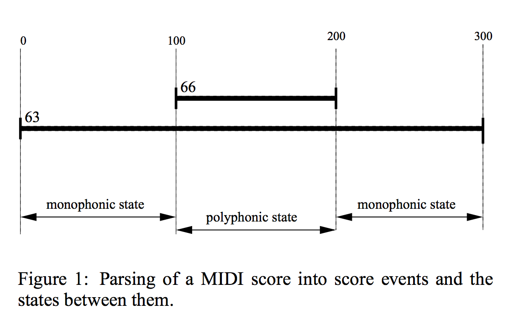
音乐：
STFT -> 4096点汉明窗，fs=44.1kHz，即93ms。
然后把MIDI score切成和音乐帧数差不多的数量，使矩阵更正方形。
5.2 计算本地距离local distance
分数矩阵ldm，用来储存音乐第m帧和乐谱第n帧的相似分数。
分数由频域得到，主要包含音高、音符转换状态信息。音符模型定义了attack frames用了音高和onset，而sustain frames只用了音高。
Q：为什么大家在音符建模的时候都省略了decay frames？decay frames在实验中是被忽略了还是被算作sustain frames？
5.2.1 Sustain Model
Q：特征
A：只用了pitch。因为pitch tracking算法不怎么可靠，尤其是在polyphonic很容易出错，所以此处用了一个Peak Structure Match算法。
Q：Peak Structure Match算法
A：计算了一个本地的Peak Structure Distance(PSD)值。本地PSD是滤波后能量比总能量。滤波器使用的是谐波带通滤波器。谐波是根据预期的音高得到的。
subQ：此处的harmonic band pass filter的harmonics是怎么选的？有几个频带？只包括基频吗？
subA: 用前六个谐波。滤波器带宽十分之一半音。tolerance是四分之三半音。
subsubQ：tolerance指什么？
Q：Peak Structure Match算法的polyphonic问题
A:这个算法在monophonic超有用。但polyphonic里一些超大声的乐器把短小音轻的音符都盖住了。把能量放在对数度量上会有用。
Q：Peak Structure Match算法的缺点
A:
1. 在polyphonic中，和弦的几个音频的谐波能覆盖很大一部分频谱，所以滤波器一定得精准。
2. 窄带滤波器对固定音高乐器（钢琴）很有用，然而对弦乐和歌声就惨了。因为唱歌的时候颤音差半个音都正常好嘛！解决方法就是对每个帧调滤波器参数。。。
QQQ：我有点方了。不是分数越低说明越相似吗？为什么滤波之后的能量是最终得分？能量难道不是越相似越大？
5.2.2 Attack Model
Q：为什么要加Attack Model？
A：只用sustain model的结果都不好。
因为
1. 上一个音符余音未袅
2. attack的能量会扩散到整个频域。只用sustain model的PSD作为相似分数的依据，就会令attack帧的PSD对各个乐谱帧都很相似。所以已经attack的这个note的发现必然比真正的onset晚。大概晚即百分之一秒。
3. 在和弦A换到和弦B时，可能只有一个音符是变了的。这个小变化可能不足以用来发现新音符。
Q：怎么实现？
A:把乐谱里面某些note的最开始几个帧作为attack帧，在计算这几个帧和演奏频谱的相似性是，不使用PSD作为分数，而改用attack distance（AD）。公式大概就是能量和上一帧变化的和之类的。
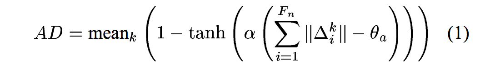
5.2.3 Silence Model
Q：建模对象？
A:只建模那些时长大于100ms的休止符。更短的休止符被上一个音符合并了。
Q：乐谱上怎么知道长度大不大于100ms？速度按乐谱速度算的吗？
模型：
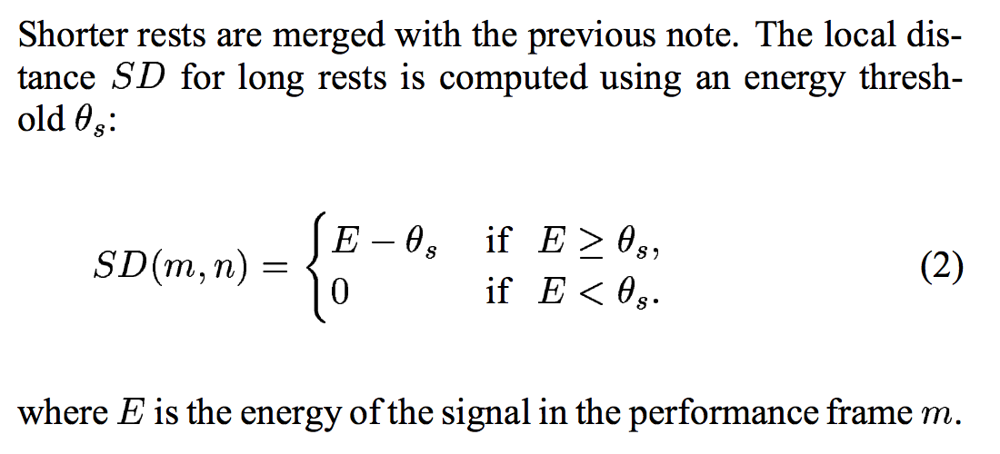
5.3 DTW
5.3.1 Local Constraints计算相似分数和的方式，暨如何得到adm矩阵
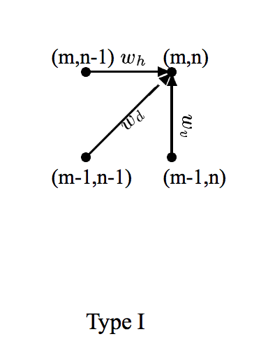
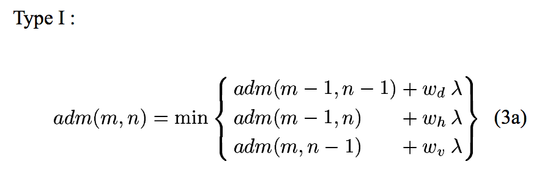
Type I 可以横着走或者竖着走。即可以有多余的或者落下的音符。这在polyphonic里表现的不好。
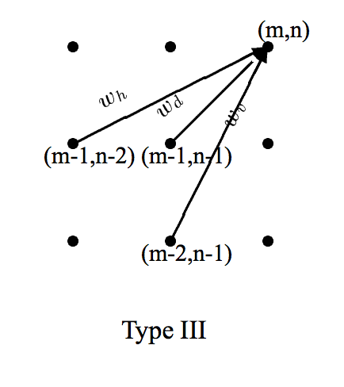
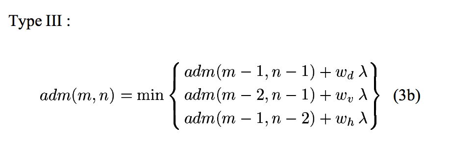
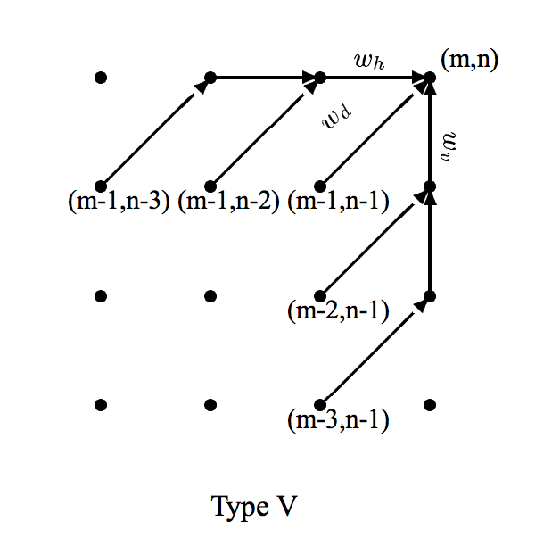
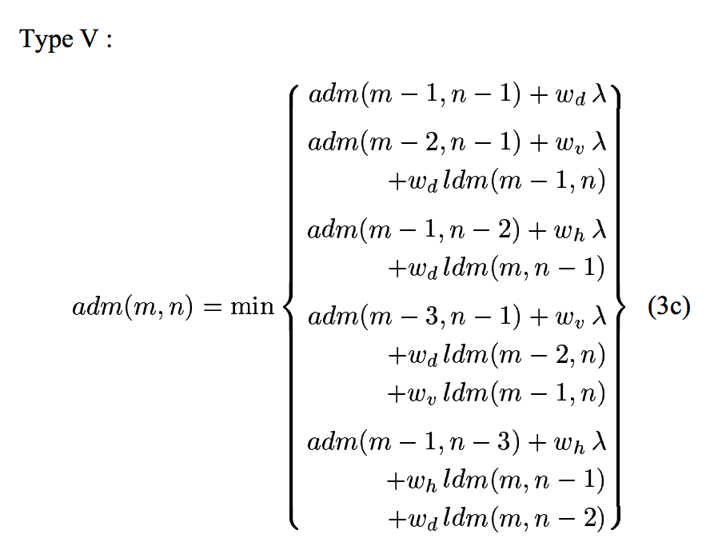
对Type I和V, [wv wh wd] = [1 1 2]
对Type III， [wv wh wd] = [3 3 2]
这几个数都是常用权重，还蛮好用的。这个实验里使用了V，但是III也没什么问题。
5.3.2 路径的剪枝
Q：为什么要剪？
A:对一个三分钟长的音频来说，如果帧长5.8ms，那就一共有36000帧。那算ldm矩阵和adm矩阵就需要36000^2 = 1.3 × 10^9的大小。大概要2.5GB。
Q：为什么是36000帧？3×60×1000／5.8不是等于31k吗？
Q：怎么剪？
A:DTW的adm计算呢，是一行一行来的。就是按照音频帧，一帧一帧来的。设当前帧数为m。在当前帧，只有结果小于一个阈值的路径会被保留，其他的都剪掉了。阈值的算法是动态的，是上一帧adm的最小值。即
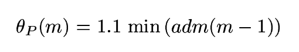
然而呢，在当前选择路径两旁的路径不会被剪，从而防止误剪。一般这个宽度设为400帧。
5.3.3 快捷径
大部分应用不要求音符内部的对齐，只需要知道音符的开始和结束就好了。所以就有一种快捷径，只储存每个表演帧和某个音符的对应关系。As the local constrint types III or V need computation with a depth of 3 or 4 frames respectively, only 2 or 3 frames per performance frame are stored for each score event reducing memory requirements by about 95%.
Q: 上方英文看不懂
5.4 结果
Q：参数
A:hop size 5.8ms，一般是256个点。
这个选取是对精确度和计算时间进行平衡。算短音频时，可以适当减少hop size，从而增大精确度。有的时候可以增大hop size，从而快速得到一个大致结果。
Q：即使减小hop size能增大时域分辨率，可频域分辨率下降了啊，这样对算PSD好嘛？
Q：评价方法
A:手动ground truth不好搞，只用了一个小数据集来衡量。
还用结果生成了MIDI，又用MIDI合成了音频，将音频和原表演同时播放，得到了一个总体上的估计。
Q：局限
A:
1. 很短的音符（4个帧以下）很难检测，而且会影响周边音符的成绩。所以就把乐谱里很短的音符和下一个音符合并成和弦了。
2. 空间还是太大，目前只能处理六分钟以下的音频和4000音符一下的乐谱。
3. 不能用在打击乐上。
Q:鲁棒性
A:故意删掉了乐谱里的52歌音符，对全局的对齐没什么大影响。
Q:结果
A：用了三个钢琴家的几段爵士钢琴的即兴演奏，声音和MIDI都被录了下来。有个曲子非常快，大约70ms就有新的attack，还有的非常慢，有好多trills和很道德动态范围。
ends很难得到，因为会有回声。所以我们只测量了onsets。“对”是指结果中的表演onsets时间离正确对应的乐谱音符最近。这样得到的结果的错误率是9.7%。一共有9024个onset被检测到了，有65%的错误是在短语80ms的音符上的。乐谱onset和结果的标准差是23.8ms。
Q:这个测试数据怎么能让演奏和乐谱完全对应呢？正常的看谱子演奏谁会完全和谱子时间对应啊。
I[ssue]:这个论文中用到的音符时间，用了真正的时间（秒、毫秒）。对于其他论文来说，乐谱是客观存在的，而不是通过MIDI录制的。所以一般来说乐谱中的时间只能是乐谱时间（几个节拍之类的）。
Q：对参数的评论
hop size是5.8ms，窗长93ms。窗的中心是帧的位置。然而这个可以改进成用窗的能量重力中心。
6 在在线Score to Audio Alignment中使用
本部分为
> Arzt, Andreas, Gerhard Widmer, and Simon Dixon. “Automatic Page Turning for Musicians via Real-Time Machine Listening.” ECAI. 2008.
的论文总结
Q:关键词
A:online DTW，tempo model, audio to audio alignment，no training
Q:大体步骤
A:MIDI合成audio，同时得到online audio-to-audio matcher和基于前几帧alignment result的tempo model，得到current score position。
6.1 数据呈现
把两个音频流切成46ms的window size和20ms的hop size，频域有84个frequency bins，在370Hz以下线性分布，以上指数分布，with semitone spacing。
为了强调note onsets，只有the increase in energy in each bin relative to the previous frame is stored.
Q:semitone spacing指线性部分还是指数部分？
Q:不了解the increase in energy in each bin relative to the previous frame is stored是怎么操作的。不store的部分怎么处理？
6.2 online DTW
使用了Dixon的online DTW算法。
来了一个新的列的feature，只计算当前列上下一段距离的similarity score，其他的设为INF，这样计算augmented score时（计算路径时），就只能在限定范围计算了。
6.3 前向-后向策略
Q:使用这个策略的目的
A:改进Dixon的方法，使其更具精确性和鲁棒性。
Q:具体内容
A:在当前音频帧（矩阵当前列）计算完后，再计算一个光滑的回溯路径，从当前位置（i，j）开始。回溯score position100步，得到一个更像最优路径的路径，然后前向计算，如果能到原（i, j），那就太好了。如果到不了，就blabla做一些我看不懂的事。。。
Q:为什么重新向前计算能够到一个不同的地方呢？
6.4 A Simple Tempo Model
Model：
计算回溯路径，得到最近20个检测到的onsets，每个onset的本地速度是这样计算的：放一个中心为这个onset的3秒window，计算这个window的回溯路径斜率。这样得到20个local tempi，用这几个tempo来估计当前local tempo。
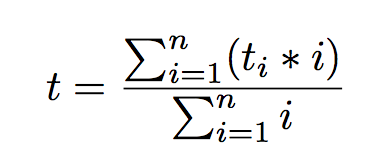
在ODTW中使用tempo model：
relative tempo用来改变score represention的长短 -> 可以用来拉伸或删除score中的events。
具体操作:
当前tempo为t（斜率），如果t>1，说明performance太快了，就有(t-1)/t的几率要在下一帧删除一行。如果t<1,就有1-t的几率在下一帧增加一行。不能连续三次做这种操作。